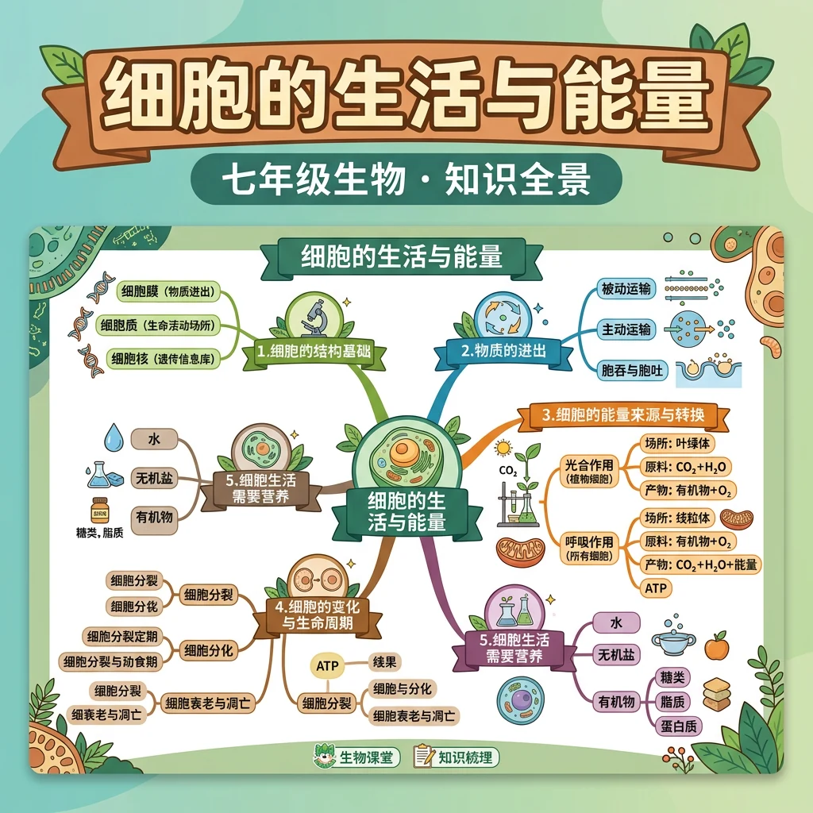
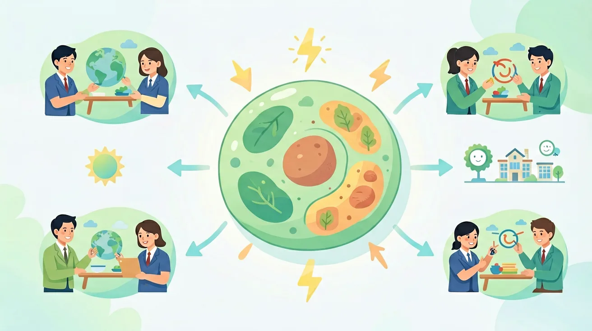

细胞如何获取物质？能量从哪里来？深入了解细胞的日常"生活"
细胞需要不断获取营养物质，排出废物，并将有机物中的化学能转化为生命活动所需的能量（ATP）。
物质不能随意穿越细胞膜——有的靠浓度差自由扩散，有的需要载体蛋白，有的还要消耗能量主动运输。
因此我们需要理解物质跨膜运输的三种方式，以及线粒体如何通过细胞呼吸为细胞提供能量。
点击三种运输方式，观察膜上分子运动模拟
| 运输方式 | 浓度方向 | 是否需要载体 | 是否消耗能量 | 典型物质 |
|---|---|---|---|---|
| 自由扩散 | 高→低 | ✗ 不需要 | ✗ 不消耗 | O₂、CO₂、H₂O、乙醇 |
| 协助扩散 | 高→低 | ✔ 需要 | ✗ 不消耗 | 葡萄糖进入红细胞 |
| 主动运输 | 低→高 | ✔ 需要 | ✔ 消耗ATP | Na⁺/K⁺泵、矿质离子 |
葡萄糖（C₆H₁₂O₆）在细胞质基质中分解为2个丙酮酸（C₃H₄O₃），释放少量能量，生成少量ATP和NADH。
丙酮酸进入线粒体，在线粒体基质中与水反应彻底氧化，释放CO₂，生成NADH和少量ATP。
NADH中的氢原子经电子传递链与O₂结合生成水，同时释放大量能量合成大量ATP（约34个）。
总反应式（有氧呼吸）
C₆H₁₂O₆ + 6H₂O + 6O₂ → 6CO₂ + 12H₂O + 大量能量（约38ATP）
葡萄糖 → 酒精（乙醇）+ CO₂ + 少量能量
用于酿酒、面包发酵
葡萄糖 → 乳酸 + 少量能量
剧烈运动时O₂不足，肌肉无氧呼吸，积累乳酸导致酸痛
腺苷三磷酸（ATP）：A-P~P~P。高能磷酸键（~）断裂时释放能量，生成ADP和Pi。
ATP水解释放能量 → ADP + Pi（供能）
ADP + Pi + 能量 → ATP（储能，来自细胞呼吸或光合作用）
肌肉收缩、主动运输、合成代谢、神经传导、发光发热——一切需要能量的生命活动都由ATP直接供能。
动物细胞：细胞呼吸（线粒体）
植物细胞：细胞呼吸 + 光合作用（叶绿体）
注：有机物中储存的化学能是稳定化学能，需经细胞呼吸转化为ATP才能被细胞直接利用。
将下列物质/过程拖入对应的运输方式列中
理解了细胞的物质与能量代谢后，下一步学习细胞分裂与分化， 了解细胞如何通过有丝分裂复制遗传信息，以及如何从一种细胞分化为多种功能细胞。
课前诊断：1. 细胞的基本结构包括哪些部分？2. 细胞的主要功能有哪些？3. 细胞的能量来源是什么？
达标检测：1. 细胞通过什么方式进行物质交换？2. 细胞分裂的两种类型是什么？3. 细胞的遗传信息储存在哪里？
错因诊断：学生常见误区是认为细胞的功能仅限于新陈代谢，忽视了细胞的生长、繁殖和适应环境功能。诊断时应强调细胞的多种功能及其相互关系。
迁移挑战：设计一个实验，探究不同环境条件（如温度、光照）对细胞生长和分裂的影响，并解释实验结果。
先独立作答，再点选项查看对错与错因。
窗台绿萝比柜内绿萝生长更好的根本原因是
检测淀粉含量时应选取叶片的
若将窗台绿萝突然移至黑暗处，首先减少的物质是
绿萝细胞生命活动所需的能量最终来源于____转换的化学能
答案：太阳光能
光合作用将光能转化为有机物中的化学能
比较两组绿萝时，需要保持相同的____等变量（写一个即可）
答案：温度/水量/营养液浓度
对照实验需控制单一变量
关于叶肉细胞能量转换的正确叙述是
设计实验验证不同光照条件下叶片淀粉含量变化
❓ 为什么咸菜会蔫儿？细胞真的会'喝水'吗？
❓ 线粒体为啥叫'动力工厂'？它和电池有啥区别？
❓ 无氧呼吸时细胞会不会'憋死'？
学完这一课，这些问题你都能自信地回答。
🎯 能说出物质跨膜运输的三种方式及特点
🎯 能分析有氧呼吸各阶段能量转换过程
🎯 能判断不同细胞活动所需的ATP来源
用动画拆解线粒体内膜折叠的嵴结构
ATP合成酶像水电站涡轮机，H+浓度差是水流
对比自由扩散与主动运输就像自行车下坡和上坡
展示荧光标记的葡萄糖进入细胞动态过程
用快递员分拣包裹类比囊泡运输
✅ 酵母菌等始终优先无氧呼吸
💡 将'无氧'与'缺氧'概念混淆
✅ ATP是能量载体，像充电宝不是电
💡 对'能量货币'比喻理解片面
口诀：高进低出自扩散，逆水行舟要能量（主动运输）
类比：线粒体像加油站，把糖里的'原油'提炼成'汽油'（ATP）
红细胞吸收葡萄糖的方式是？
下列哪个结构能产生ATP？
腌制萝卜变软的主要原因是？
运动员剧烈运动时，骨骼肌细胞主要靠？
海鲜暂养池中加入氧气泵，是为了？
And：学生知道细胞有细胞膜包裹
But：不清楚膜的具体成分如何实现保护功能
Therefore：理解流动镶嵌模型对解释生命活动至关重要
细胞膜主要由磷脂双分子层和蛋白质构成，像三明治一样——磷脂分子头部亲水朝外，尾部疏水朝内。膜蛋白有的嵌在表面（如识别信号的糖蛋白），有的贯穿整个膜（如运输物质的通道蛋白）。例如，一个人体肝细胞的膜上约有500万个蛋白质分子，它们像船只一样在磷脂的‘海洋’中流动。
🌍 肥皂泡实验可以模拟细胞膜：当肥皂水形成双层薄膜时，色素颗粒（模拟膜蛋白）能在膜上移动，这和细胞膜的流动性原理一致。
下列哪项不是细胞膜的功能？
And：学生理解物质能进出细胞
But：认为所有运输都需要能量
Therefore：明确顺浓度梯度的运输特点
被动运输像滑滑梯——物质从高浓度自动到低浓度，不需细胞供能。自由扩散是小分子（如氧气）直接穿过磷脂层；协助扩散需要通道蛋白帮忙，比如红细胞膜上的水通道蛋白每分钟能通过30亿个水分子。渗透是水分子特有的被动运输，比如洋葱细胞在清水中会吸水胀大。
🌍 泡发干货时，干海带吸水变软就是渗透现象——水分子从高浓度（清水）向低浓度（干海带细胞）移动。
氧气进入肺泡细胞属于？
And：知道物质能逆浓度运输
But：不理解能量如何起作用
Therefore：认识ATP供能的关键机制
主动运输像水泵，需要消耗ATP（能量货币）把物质从低浓度‘抽’到高浓度。钠钾泵是最典型的例子——它每消耗1个ATP分子，能泵出3个钠离子、泵入2个钾离子，维持神经细胞内外离子浓度差。这个过程占人体静息耗能的1/3！载体蛋白形状变化需要能量，就像卡车卸货要烧油。
🌍 儿童喝高钙牛奶时，小肠细胞通过主动运输吸收钙离子，即使肠道内钙浓度比血液低10倍。
主动运输区别于被动运输的特点是？
And：见过细胞‘吃东西’的动画
But：不明白大分子如何完整进出
Therefore：理解膜流动性在运输中的应用
胞吞胞吐是运输‘大件行李’的方式。当白细胞吞噬细菌时，细胞膜内陷包裹细菌形成囊泡（胞吞），这个囊泡直径约1-2微米。分泌胰岛素时，高尔基体的囊泡与细胞膜融合释放物质（胞吐），一个胰腺细胞每天能分泌约1000个这样的囊泡。整个过程依赖细胞膜的流动性，就像快递员送包裹。
🌍 伤口化脓时，脓液里的死亡白细胞就是通过胞吐作用把吞噬的细菌残骸排出。
下列哪种物质最可能通过胞吐运输？

